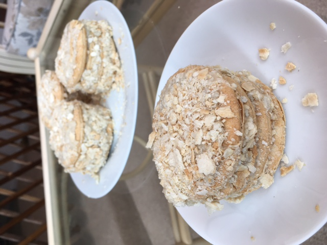

Quick Russian Napoleon
Ingredients:
-
2 Packs of 200g Jacob's Butter Puffs Biscuits
-
2 Cups of Plant Milk
-
4 tbsp of Caster Sugar
-
3 tbsp of Cornflour
-
1 tbsp of Vanilla Extract

Method:
-
For the vanilla custard filling mix 2 cups of plant-based milk with 2 tsp of vanilla extract whilst
it is boiling.
-
Then add the caster sugar and cornstarch.
-
Transfer the mixture to a heat-resistant blender and blend until you get a nice smooth texture.
-
Pour the mixture back into the pan, lower the heat and cook for another 10 minutes until it
thickens.
-
Alternatively, instead of adding the starch to the boiling milk and then blending it you can also
dissolve it in some of the cold plant-based milk, then stir it into the hot plant based milk with
the caster sugar and cook for 10 minutes on a lower heat.
-
Transfer the mixture to a tupperware dish, and let cool down in the fridge.
-
When the custard has cooled down, add it to one of the puff biscuits - this will be your first
layer. Spread evenly and then add another layer of puff biscuits on top (including the top layer).
-
Repeat the process 5 times (5 biscuits for each individual cake).
-
Crush 3-4 biscuits and cover the top and the sides of the cake with the small crushed pieces. They
will stick to the cream on the top and sides.
-
Keep it in the fridge overnight.